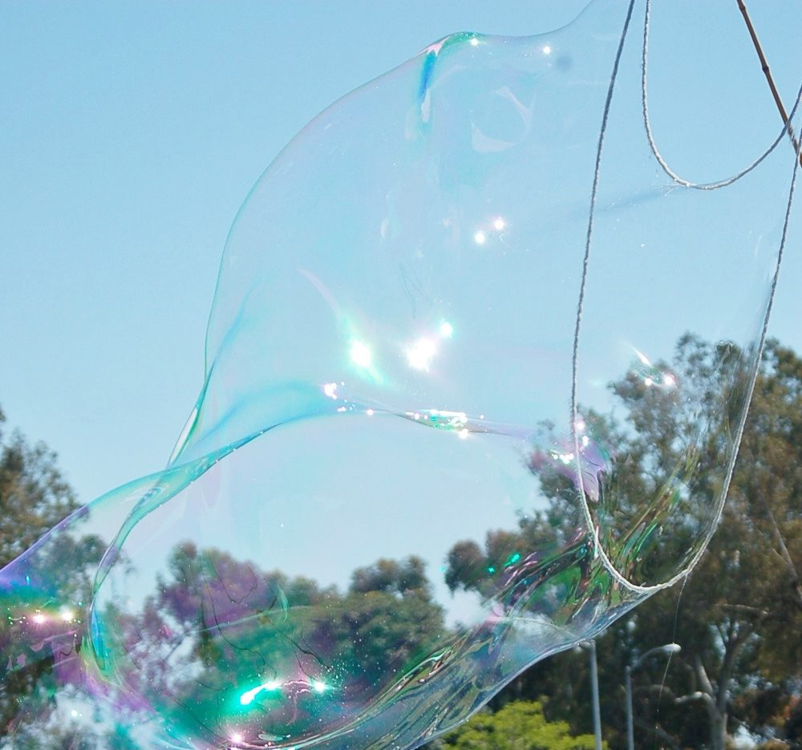
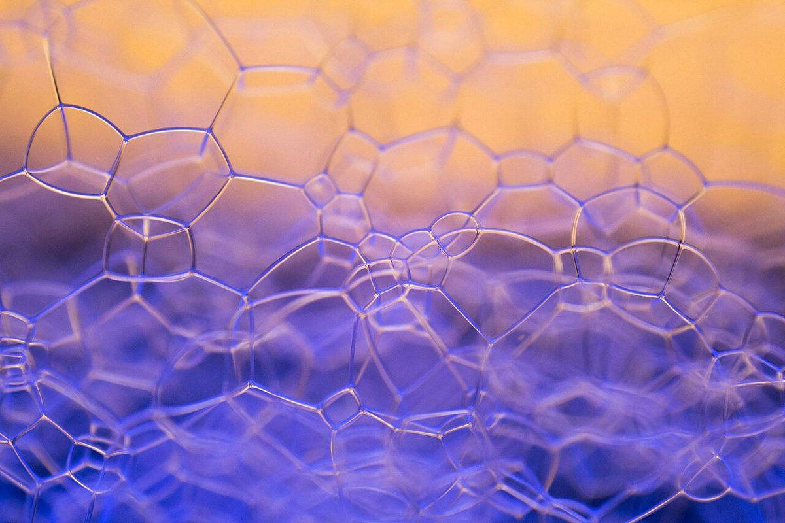
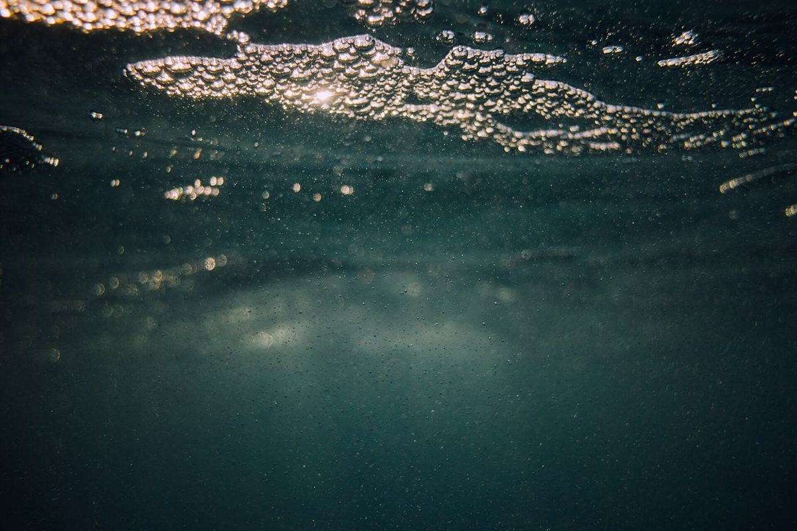
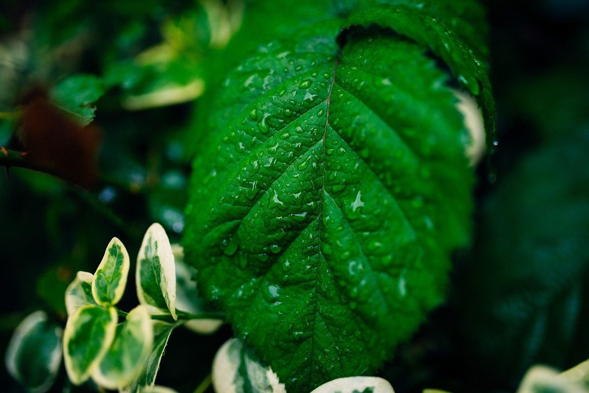
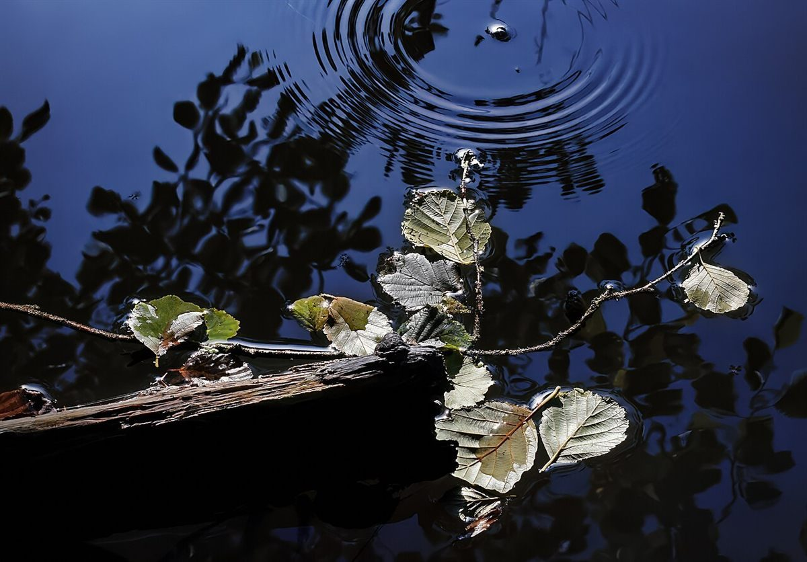
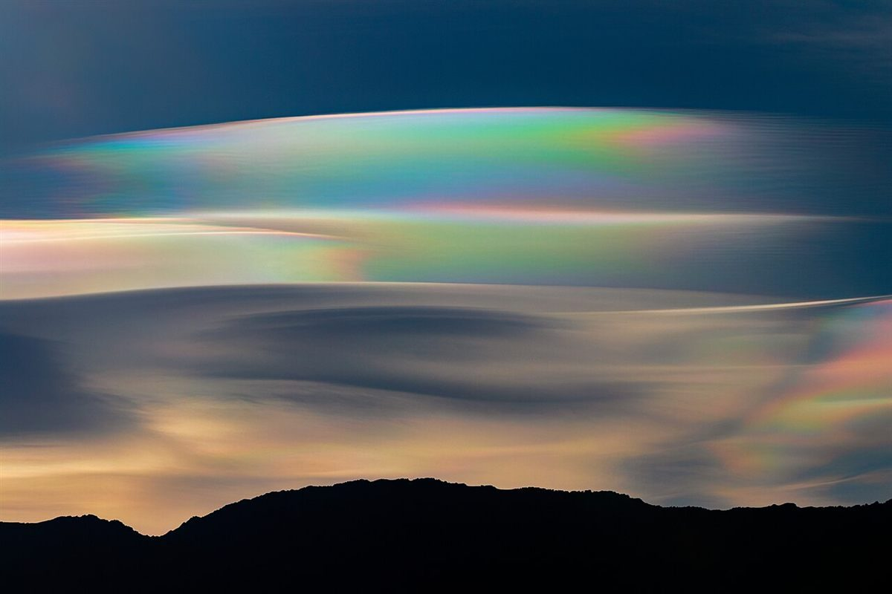

カフェ / 千葉県八千代市
PUKU八千代
千葉県八千代市米本にあるカフェ「PUKU 八千代」のご案内ページです。営業時間やメニューなど、詳しいことは準備中。まずはInstagramをのぞいてみてください。



ぷくっと、ひとつぶ。
制作側の連想
「PUKU」の音から、泡を思い浮かべました。
店名の由来は分かりません。制作側は「PUKU」という綴りの響きから、「ぷくっ」「ぷくぷく」とふくらむ泡の音を連想しました。そこでこのサイトは、大きさの違うまるい泡(円)を並べた「泡の直径帖」という作りにしています。ページ番号も「φ1」「φ2」と、円の大きさで数えます。お店の理念・由来とは無関係の、制作側の連想です。
泡の直径表(イメージ)
小さな泡から大きな泡まで。
写真は八千代市やお店とは関係のない、国外・撮影地不明のフリー素材です。まるい形のものを選んで、小さい順に並べました。





ご案内
お店のこと(確認できたものだけ)
| 所在地 | 〒276-0015 千葉県八千代市米本1318-1 |
|---|---|
| 電話 | なし |
| 営業時間 | 準備中 |
| 定休日 | 準備中 |
| ご予約 | 準備中 |
| 駐車場 | 準備中 |
| SNS | Instagram @puku_yachiyo |

虹色の膜
ひとつぶの泡のおもて。
シャボン玉の表面は、光があたると虹色に見えます。ここは、そのイメージとして置いた雲の写真です(お店とは関係ありません)。